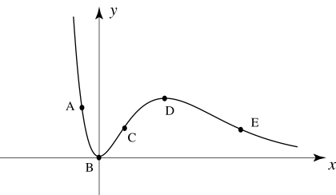

Long description: workbook11block1fig3

Alt text: The image displays a curved line graph on a two-dimensional coordinate system with labeled points A, B, C, D, and E.
This description was generated by AI and has not been verified by a human. If you spot an error, please use the feedback link below.
- The graph shows a curve plotted on the x-axis and y-axis, suggesting a function of x.
- The points A, B, C, D, and E are marked on the curve, indicating specific coordinates.
- Point B is located at the origin, where the curve appears to pass through the point (0, 0).
- The curve starts high on the y-axis near point A, passes through the origin at point B, and then decreases, reaching a local maximum near point D.
- After point D, the curve continues to decrease, passing through point E, and continues downward along the positive x-axis.
- The graph illustrates the shape of a function's graph, potentially related to concepts of slope or rate of change.